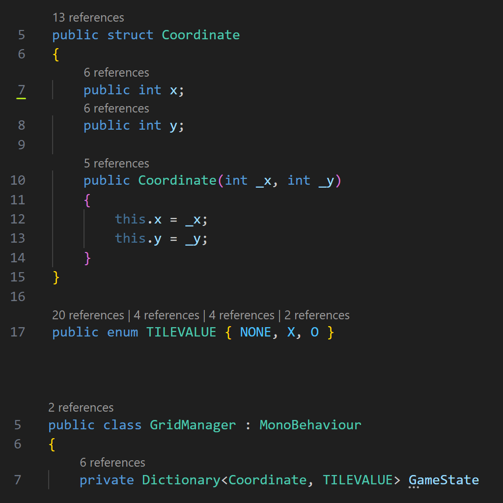
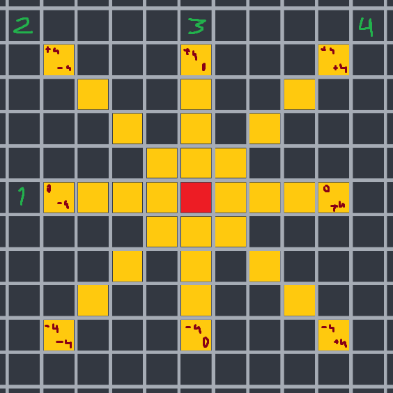
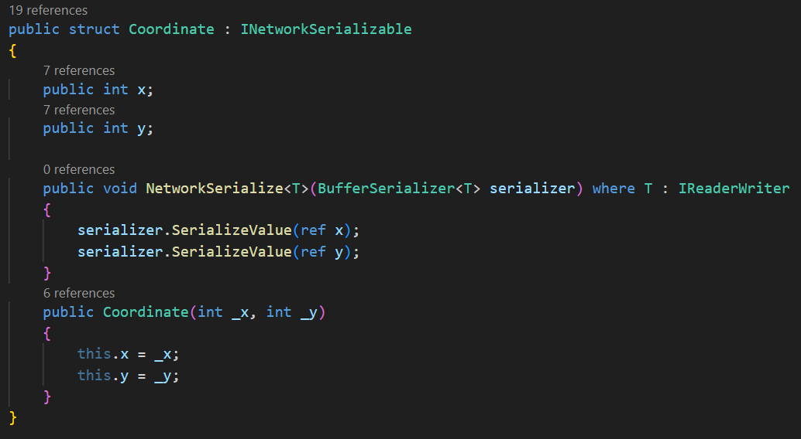

Netissä ei ole viisi merkkiä putkeen vaativaa ristinollaa loputtomalla areenalla. Tarkoituksenani on vähitellen kehittää peli näillä spekseillä. Ensimmäinen tavoite on jonkin näköinen tietorakenne ruudukolle ja instantioida ruudut näkyviin. Toinen tavoite on pelin päättävä algoritmi. Milloin on viisi samaa symbolia putkeen. Kolmas tavoite on netwörkkäys. Aloitan todennäköisesti projektin alusta, kun pelin peruslogiikka toimii.
Video
Projektin aloitus
Peruslogiikka - Ensimmäinen väliraportti
 Tietorakenteen muodostin luomalla structin koodinaatteja varten ja enumin ruudun tilaa varten. Nämä dictionaryyn ja saadaan ruudun paikka ja tila tallennettua. Gridmanagerissa klassinen kaksi sisäkkäistä for-looppia ratkaisu täytää tiedot ja instantio ruudukon.
Pelaaja voi vaikuttaa ruudukon tilaan ampumalla säteitä instantioidun ruudukon collidereihin. TileWasClicked-funktion palauttaa ruudun sijainnin ja uuden tilan. Tiedot päivitetään GridManagerille.
Sain yksinkertaisen idean voiton tarkistamiseksi. Voitto voi ilmetä ainoastaan pelaajan asetettua symbolin ruudukkoon, joten koko ruudukkoa ei tarvitse käydä läpi, vaan ainoastaan ne ruudut, joihin viimeiseksi asetettu symboli voi luoda viiden symbolin sarjan. Asetettu ruutu on merkitty kuvaan punaisella, tarkistettavat ruudut on merkitty keltaisella.
Ensimmäiseksi mieleeni tuli iteroida ruutujen läpi neljän for-loopin kanssa. Yksi looppi jokaista ‘viivaa’ kohti. Looppi alkaa aina -4:stä ja päättyy +4:än. Ratkaisu ei ole kaunis, mutta se on yksinkertainen ja toimii. Itse tarkistaminen tapahtuu pitämällä kirjaa väliaikaisista pisteistä. Aina kun ruudun tila on sama kuin asetetun ruudun, annetaan piste. Kun se on eri, nollataan pisteet. Viiden pisteen kohdalla voidaan julistaa voittaja. Jos viisi pistettä ei tule millään loopilla täyteen, peli jatkuu normaalisti.
Netcode for gameobjects - Toinen väliraportti
Halusin palata Peliohjelmointi nyt -kurssilla käytettyyn Netcode For Gameobjects networking-kirjaston pariin. En kurssilla saanut mitenkään puristettua pääni sisään, miten sitä käytetään.
Kuten muistin, kirjastoa on vaikea käyttää. Otin hieman vauhtia tutoriaalista ja kaikki meni ihan päin helvettiä. En saanut ensimmäisen kahdentoista tunnin aikana peliä toimimaan. Kirjaston ServerRPC ja ClientRPC -funktiot eivät vain menneet päähäni. Lopulta päätin aloittaa alusta ja pyrkiä käyttämään mahdollisimman vähän kyseisiä kirottuja funktioita. NetworkVariable-muuttuja reittiä pitkin kaikki vaikutti paljon helpommalta, mutta tarvitsin silti RPC-funktioita pelin viimeistelyyn. Neljän tunnin taistelun jälkeen vihdoin ymmärsin miten ne toimivat!
Koodi pysyi hyvin samankaltaisena pelin offline versiion nähden. Tietyille muuttujille piti tehdä serialisaatiot, jotta niistä pystyi tehdä NetworkVariable-muuttujia. Joitakin funktioita kutsutaan RPC-funktioissa, jotta pelin tila synkronisoituu. Kuvassa on päivitetty koordinaatti struct.
Halusin seuraavaksi yhdistää pelaajat palomuurin läpi. Olin jo aiemmin päättänyt haluavani Among Us tyylisen koodisysteemin peliin. Eli host saa peliltä koodin, jonka hän jakaa kaverille. Kaveri voi koodilla liittyä hostin lobbyyn. Peli alkaa. Unityllä oli suoraan valmis ratkaisu tähän, Unity Relay. Kävin opiskelemassa ja kopioimassa pari riviä koodia ja homma lähti sillä pelittämään. Kannattaa kutsua StartHost-funktiota niin se hosti toimii paljon paremmin kuin jos sitä unohtaa kutsua.
Jatkokehityksenä olisi hyvä tehdä niin että ruudukko on valmiiksi instantioitu. Aiheutan valtavasti verkkoliikennettä, kun instantioin ~500 NetworkObject-kappaletta aina pelin alussa.
Toinen parantamisen paikka olisi ohjelmoida pelin klikkaukset tapahtumaan clientin puolella. Tällä hetkellä, jos hostilla ja clientillä on peli-ikkuna eri kuvasuhteilla clientin klikkaukset menevät ihan minne sattuu. Ongelma on ratkaistu lukitsemalla pelin kuvasuhde.